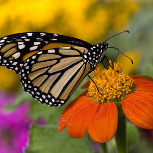
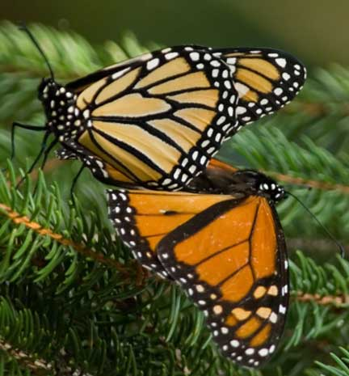

Some of the most beautiful transformations we get to witness in nature is that of a butterfly. There are so many around the world to discover.
To learn more about the butterfly species visit Wiki Butterfly!Butterflies experience a four-stage insect life cycle.
I was an egg.
Butterflies feed primarily on nectar from flowers.
American moth-butterflies.
Skippers.
Blues, coppers, hairstreaks.
Brush-footed or four-footed butterflies.
Swallowtails.
Whites and allies.
Metalmarks.
Some male species seek hilltops and ridge tops in search of females for mating.
Butterflies use their antennae to sense the air for wind and scents.
| Species | Shapes and Colours |
|---|---|
| Hesperiids | Pointed Angle or Hook |
| Other Families | Knobbed |